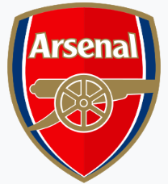
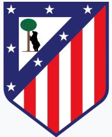

Az Arsenal Football Club – ismertebb nevén egyszerűen Arsenal – egy profi labdarúgóklub, amelynek székhelye az angliai Észak-Londonban, Islingtonban található. A csapat az angol labdarúgás legmagasabb osztályában, a Premier League-ben szerepel. Hazai szinten az Arsenal 14 bajnoki címet (köztük egyet veretlenül), rekordot jelentő 14 FA-kupát, 2 Ligakupát, 18 FA Community Shieldet és egy Football League Centenary Trophy-t nyert. Európai szinten egy Kupagyőztesek Európa-kupáját és egy Vásárvárosok Kupáját hódított el. A megnyert trófeák számát tekintve az angol labdarúgás harmadik legsikeresebb klubja, egyben a világ labdarúgásának egyik legsikeresebb egyesülete.

Az Atlético Madrid – amelyet angolul gyakran Atlético Madridnak vagy egyszerűen Atléticónak, köznyelven pedig Atletinek neveznek – egy madridi székhelyű spanyol profi labdarúgóklub, amely a La Ligában szerepel. A csapat hazai mérkőzéseit a 70 813 férőhelyes Riyadh Air Metropolitanóban játssza.
Az Aston Villa Football Club egy profi labdarúgóklub, amely az angliai Birmingham Aston városrészében működik. Az 1874-ben alapított egyesület az angol labdarúgás legmagasabb osztályában, a Premier League-ben szerepel, hazai mérkőzéseit pedig 1897 óta a Villa Parkban játssza. Az Aston Villa Anglia egyik legrégebbi és legsikeresebb klubja: hétszer nyerte meg az angol bajnokság első osztályát (Football League First Division) és az FA-kupát, ötször a Ligakupát, emellett egyszer hódította el a Bajnokcsapatok Európa-kupáját, az Európai Szuperkupát és az Európa-ligát.